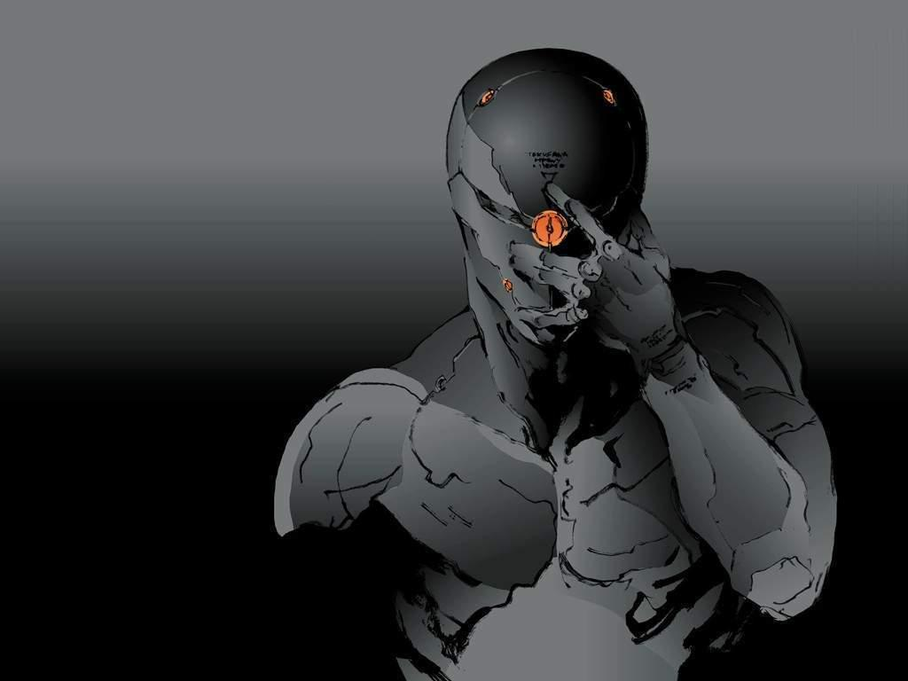

Forums galactiques > Assemblée Galactique : diplomatie officielle > Dépôt des Plaintes contre Commandants
| Requiem Respect diplomatique : 1538  09/09 ETU 20:10  | Score : 0 Détails Ne soyez pas vache Olessia. Les cris des habitants de votre natal étaient beaucoup plus jouissif lorsque mon collègue s'en est occupé.
| ||
| Corum Respect diplomatique : 1323  09/09 ETU 20:11 | Score : 8 Détails jaelen, arriva furibond dans la salle des plaintes..
"Bon c'est quoi cette histoire ? C'est ça la relève ? Bon ben je crois qu'il est tant que je reprenne du service, car les bonnes manières se perdent quelque peu.. AHHHH, mais qu'ils sont imprudents ces jeunes, le calme apparent de ce dernier mois (si ce n'est l'incroyable conquête de ce bon vieux JLP sur un système sans défense qui l'a fait passer de "combattant redouté et redoutable" à "opportuniste arriviste parvenu" et lui a permis de réaliser un vieux fantasme au prix de son honneur..) leur confère l'illusion qu'ils peuvent à loisir se gausser de valeurs que nous avons défendu depuis si longtemps.. On attaque pas les jeunes commandants..sinon je m'énerve, les joueurs sensés s'énervent, les super proculiens s'énervent, les communistes voient rouge et même les rastas s'agitent ..c'est pour dire.. Alors arvamachinchose tu vas te détendre tranquillement, respirer profondément, arrêter l'emphase diarhétique et..garder les planètes que tu lui as pris..oui..Tu en auras besoin pour te réfugier..ah mince je suis bête on va te retrouver facilement c'est vrai..alors offre les à un jeune commandant pour expier ta faute avant de périr Commandants de la galaxie des exilés, enfin ceux qui n'ont pas encore brader leur sens de l'honneur pour quelques miettes de pouvoir (salut recuicui ça faisait longtemps^^tu faisais donc semblant quand tu défendais les jeunes commandants?? quelle surprise..), la Caste des Existants offre 1 000 milliard de leems pour chaque informations divulguées sur des positions systémiques et géostratégiques du sieur grande gueule..oui je dit ça car le dernier qui se soit permis de rire à coup de grands "Mouahahahahaha" d'un jeune commandant fraichement arrivé parmi nous..tiens merde on a déjà oublié son nom ..et ben..heu..il rigole plus...enfin on l'entend plus quoi.. Commandant Bakuryu, vous souhaitiez expérimenter la stratégie de notre monde ? Je vous en offre les moyens illimités, la fortune personnelle de la Caste des Existants repose essentiellement sur des valeurs morales et nous disposons de fonds conséquents et de quelques contacts intéressants pour vous le permettre, nous mettons à votre disposition quelques milliard de flottes et plusieurs dizaine de systèmes pour cela..contactez nous et nous vous aiderons.. Ah arvaskunkeuthanasié, tu peux aussi m'appeler "super jaelen", j'aime déjà ça..et j'espère que tu auras eu le temps de te faire quelques leems avec ton idée ingénieuse..car tu vas sans doute en avoir besoin.. Bien évidemment en tant qu'ancien diplomate j'accepte que tu te couche et que tu demandes pardon, si ta susceptibilité intellectuelle te permet ce type de gymnastique.. Sinon demande de l'aide aux vampires..il a l'habitude de financer les gens de ton engence.. Le jeune ex-diplomate se tourna vers le proculien, et lui adressa un clin d'oeil complice | ||
| Requiem Respect diplomatique : 1538 09/09 ETU 20:18 | Score : 1 Détails Jealen! Je ne defend pas Arva, je lance une pique à Ellys!
Ne vous méprennez pas sur mes intentions. Sinon, ce que vous dîtes sur mon compte s'apelle: préjugés | ||
| Arva Anyzzi Respect diplomatique : 118  09/09 ETU 20:25 | Score : 3 Détails On attaque pas les jeunes commandants...
Oupsss.. ben... ça déja, c'est trop tard... Les joueurs censés s'énerve? Qu'apellez vous par joueur? Euh sinon... Quoi dire d'autre.. Ah si! Si je donne des renseignements sur mes positions, vous me donnez aussi les 1000 milliards de leems promis? * dit il avec une lueur dans l'oeil.* Je n'ai pas attaqué que des jeunes commandants, rassurez vous! MOUHAHAHHAHAHAHHAAaaaa... Oupss.. c'est vrai, il n'aime pas ça le diplomate... Sieur grande gueule? J'adore le surnom. Vous êtes au moins doué pour quelque chose, trouver les surnoms... Me coucher et demander pardon? Me coucher? Je crois que vous êtes un peu fatigué la, oser me demander de me coucher... Le seul qui devrait se coucher, c'est vous même, trés cher. Vous me paraissez fatigué pour demander de tels choses... Demander pardon? Ok pas de probléme, et juste aprés, j'irai me confesser, promis... | ||
| Ellys Respect diplomatique : 1592  09/09 ETU 20:53 | Score : 3 Détails Commandant Requiem,
Ellys serait bien en peine de vous entendre, elle enchaine agréablement les mojitos sur la plage et a demandé à ne point être importunée par les boulets... Mais que voulez vous moi j'ai un faible pour les boulets et si tant est qu'il y ait une une hiérarchie au sein de cette engeance pathétique vous avez sans conteste la couronne très cher... Alors comme ça vous avez eu vent des cris de Baphodys...? Vous auriez bien été en peine de les entendre vous n'étiez pas là... Enfin vous n'étiez pas là... Suffit il de déguiser l'âne en chèvre pour leurrer les autres je ne crois point. Ashkar... Son mélodieux pour un pseudonyme et stratagème vieux comme le monde. D'autres avant vous s'y sont déjà employés, espérant masquer leurs propres forfaitures... Stratagème de lâche m'est avis et d'imbécile quand on ne prends garde comme vous à déguiser le style de sa verve... Enfin bref, de cris sur Baphodys il n'y en eu point. Mon peuple a quitté depuis longtemps nos terres. C'est que voyez vous quand on souhaite s'amuser un peu avant de mourir il faut songer aux pitoyables roquets en quêtes de gloire tardive... Ceux ci deviennent particulièrment friands de planètes non défendues et il est difficile dans ces conditions d'y jouir du calme relatif à un peu de détente bien méritée. Si vous aviez été gentil commandant, nous vous les aurions même données ces planètes, mais finalement avec Ellys nous trouvons cela bien plus divertissant de vous voir parfois vous casser les dents sur nos cailloux abandonnés... Quel fier guerrier faites vous en verité ! Heureusement qu'à une semaine de l'Apocalypse la plupart d'entre nous se trouvent à des lieues de vouloir vous entraver dans vos projets machiavéliques... Sans quoi rêves de grandeur vous auraient été aussi innaccessibles que cet honneur dont vous vous glorifier et qui pourtant vous a toujours fui en 425 ans d'existence... Sur ce la musique et les cocktails m'attendent... Bonne bourre sur vos cailloux ! Nul doute qu'on ne vous oubliera pas, maintenant de là à vous expliquer en quoi vous serez inoubliable ! Cela prendrait trop de temps et j'ai en vue des males autrement plus séduisants que votre triste personne... | ||
| DarlinG3 Respect diplomatique : -29  09/09 ETU 20:56 | Score : 0 Détails Il commence a y avoir beaucoup de panique ici !
pourquoi autant de haine les ami(e)s ? Que change la fin d'un nouveau monde ? Pourquoi autant de personne se font la guerre pour un systeme ? Pourquoi n'y arrivez vous pas sans sortir une arme ? Pourquoi toujour les plus fort qui doivent gouverner ? Pourquoi attaquer des faible joueur venu de nul part pour trouver un jeu simpa ? Pourquoi autant de question sans reponse debille !!!!!!!!!!!!!!!!!!!!!!!!!!!!!!!!!!!!!!! Y'aura t'il quelqu'un un jour pour ne pas prononcer une seul menace ou ne sortir aucune uniter civile ou militaire pour pouvoir s'entendre ? Ya t'il toujour aussi de C.N pour continuer a jouer au plus fort dans cette galaxie ? Ya t'il des gens qui ne recherche que la guerre dans cette galaxie ? n'y aurais t-il pas quelque part au font de ces personne un brun de coeur pour accepter un simple pardon ? ya t'il des personne plus inteligente ou qui veule l'etre mais qui ne conaise que le mot guerre ? Sur ce je vous laisse lire meme si beaucoup d'entre vous iront directement clicker sur "-1 vocabulaire" !!!! | ||
| Corum Respect diplomatique : 1323 09/09 ETU 22:11 | Score : 6 Détails Jaelen prit le temps de regarder son holocom..il sourit et se releva pour répondre à l'impudent provocateur qui lui plaisait de plus en plus, sans doute lui rappelait-il quelqu'un..Polymnius lui fit signe de se rassoir et prit la parole d'un ton posé
"Pardonnes mon jeune ami, commandant, sa jeunesse tout comme la tienne sont propices à l'énervement, sans doute est-ce dû à une inactivité trop longue ainsi qu'à un taux de testostérone trop élevé.. Bon tout d'abord je suis content de voir que tu écoutes, cela dénote déjà une singularité par rapport aux petits tyrans de pacotille qui viennent habituellement étendre ici leur inculture crasse..mais soit un peu plus attentif je te prie..c'est bien beau de se tenir l'oreille en permanence pour donner l'impression que l'on porte attention à son interlocuteur, mais encore faut-il être con-centré.. Déjà, je constate par tes innombrables "oups" que tu as compris que ton comportement n'était pas sain..une once de moralité subsiste peut-être encore au fin fond de ton égo démesuré.. Lorsque je dis les commandants "sensés" et non "censés", je fais référence à ceux qui ont une once de bon sens et non ceux qui sont censés s'énerver, autrement dit qui ont licence à produire ce type de comportement, certes c'est un détail, mais il a son importance..car de ce fait tu comprendras que tu n'es pas encore dans la première catégorie.. Pour ce qui est de l'offre de leems contre renseignements, tu peux d'ores et déjà effacé cette lueur de convoitise de ton regard, tu me diras au moins plus personne n'a de doute sur les valeurs qui sont les tiennes et les motivations qui les agréer..Cupidité, arrivisme, cruauté..si tu m'avais écouté plus attentivement (mince peut-être est-ce un appareil auditif qu'il porte, n'allons pas plus avant dans la moquerie..) tu aurais remarqué que je m'adressais aux commandants qui " n'ont pas encore brader leur sens de l'honneur pour quelques miettes de pouvoir", tu n'étais donc pas concerné étant donné que tu attaques un jeune commandant sans défense qui ne possède que trois planètes..tu es donc un jeune sot pour qui la notion d'honneur est inapplicable..tiens toi le pour dit.. Je me souviens de toi maintenant que je te vois, drapé dans l'arrogance du jeune premier qui vient de dépuceler sa première donzelle, un contrat était sur ta tête car déjà à ton arrivée tu fanfaronnais à tout rompre, certains de mes amis d'alors voulaient te clouer le bec sous prétexte que tu ne semblais pas à même d'honorer ton titre de commandant, j'ai eu la naïveté de croire que tu apprendrais avec l'age et je constate à regret qu'il n'en est rien..J'aurais du laisser ces joueurs, ah oui j'appelle ainsi ceux qui aiment se battre mais ne peuvent se résoudre à annihiler sans une raison valable ou honorable, ils "s'amusent" donc avec les petits de ton espèce..j'aurais dû les laisser, disais-je, jouer avec toi et nous t'aurions vu venir geindre ici même, plus misérable que jamais, que l'on t'avais pris tes seules planètes et détruit tes 50 croiseurs.. mouahhahahhaa , j'aurais bien ri moi aussi.. Il te manque l'empathie et la capacité de te mettre à la place de celui que tu accables, jeune impudent, avec cela tu aurais pu devenir un commandant digne de ce nom, tu ne seras qu'un petit trait sur la longue liste des médiocres que cette galaxie a malheureusement connu.. Les propositions affluent et je constate que quelques grands joueurs sont encore en lice..il va y avoir du sport, puisse ta capacité à te défendre être aussi grande que l'orifice qui te sert à déblatérer tes inepties.. Pour les confessions tu peux oublier, je ne fais pas dans la théologie malgré mon côté dogmatique..et pour ma requête de te voir couché je pense qu'elle sera bientôt exaucée.. Certains commençaient à s'ennuyer, merci d'avoir répondu si vite mes amis. Que le dieu tricéphale accueille ton âme avec mansuétude.. et que la chasse commence.. Amen | ||
| Leid Milhanah Respect diplomatique : 620  09/09 ETU 22:27 | Score : 5 Détails Hey voila, je suis absent un week end et c'est deja le bordel!
Ha nan mais chapeau, suffise que je m'absente pour qu'Arva Humilié, vienne a nouveau me faire chier en 984, systéme qui soit dit en passant je rendrais, puisque cher petit con, vous souhaitez encore me titiller que dites vous de passer au régime supérieur? Comme je l'avais dit en mp, je connais tout vos centres nevralgiques, une branlée galactique ca vous tente, j'ai rien a faire ces dix prochains jours, en vérité si , le couronnement et un week end à Acapulco, pensez vous donc, j'aurais pu me dorer la pillule plutot que d'aller defourailler dans la médiocrité absolue, cela dit je suis heureux vous avez marché comme un grand tout seul dans chacune de mes provocations, ca me prouve votre bétise, la ou j'utilisais le second degré pour mieux vous ridiculiser et aprés tout aussi me moquer de moi meme, vous vous etes drappé de principes, genre "mais c'est qui ce vieux con??" Seulement c'est trop tard, j'ai mis en evidence votre nullité, et pour ca je considére ma mission comme accomplie, aprés votre génocide c'est du secondaire! | ||
| Ellys Respect diplomatique : 1592 09/09 ETU 22:53 | Score : 4 Détails Affalée sur un magnifique divan de soie diaprée trônant à même le sable fin de la plage, Olessia un verre de l'antique Cheval Blanc à la main, contemplait l'oeil enjoué le plasma holographique posé au sol à quelques mètres et lui servant de lien avec l'Assemblée... Au loin se percevaient les rires et les murmures enfiévrés, le souvenir d'un beau brun ténébreux à l'oeil emplit de promesses lui arracha un sourire mais décidément le retour de "Super Jaelen" valait bien toutes les distractions. Distractions qui tout au plus ne seraient de toute façon reportées que de quelques heures.
Commandant Anizzy, je crains malheureusement qu'à trop fanfaronner vous n'ayiez fini par nous réveiller la Caste des Existants... Pour ma part je vous en embrasserait bien à plein bouche tant mon ami Jaelen et son verbe tranchant m'ont manqués mais je doute qu'à la longue vous partagiez mon enthousiasme. Le fait est qu'il vaut mieux, quand on veut se pavanner dans la cour tel un coq de compétition, s'assurer d'en avoir les ergots. Faire votre démonstration de force face à un commandant aux défenses quasi inexistantes ne font qu'enfler votre crète à défaut de votre crédibilité. Cela n'aura en définitive et vous vous en rendrez bientôt compte, que l'inconfort de vous placer crète flamboyante et démesurée dans la ligne de mire de commandants autrement plus aguerris et puissants que vous... Je crains malheureusement pour vous qu'à défaut d'ergots, votre crète n'enfle jusqu'à explosion quand les Varlaags cesseront de s'amuser avec votre personne. Parfois un peu de bon sens et d'humilité valent mieux que toutes les promesses de financement. L'apocalypse approche mais si vous avez pour ambition d'en avancer la date vous concernant poursuivez très cher, ce n'est pas moi qui vais vous en dissuader. Vos rodomontades sont par trop divertissantes... | ||
| Ashkar Respect diplomatique : 154  09/09 ETU 23:49 | Score : 5 Détails Aprés avoir longuement discuté avec l'amiral Ashkar, Jarek sortit de la salle de conférence en direction de l'assemblée galactique. C'était sa première mission en temps qu'assistant, et il voulait donner le meilleur de lui même. Des ordres clairs lui avaient été donnés, il s'éxecuta donc du mieux qu'il put.
Commandants, Je viens jusqu'à vous aujourd'hui pour vous communiquer certaines informations. L'amiral Ashkar suit en ce moment même depuis son vaisseau amiral, le débat en cours, et ce avec le plus grand intéret. En effet, un different a opposé le commandant Arva à l'empire Amitia il y a peu. Ne souhaitant pas de conflit, nous avons pris contact avec ce dernier. La réponse n'a malheureusement pas été satisfaisante. J'annonce donc officielement que l'empire Amitia entre en guerre contre le commandant Arva Anyzzi. Nous sommes prés à colaborer avec d'autres commandants pour une attaque coordonnée jusqu'à anéhantissement total de l'individu. Je vous remercie de votre attention. | ||
| Boboss Respect diplomatique : 13  10/09 ETU 03:11 | Score : -5 Détails S'il vous plait commandants,
Annoncer dans cette salle les roostes que vous mettez à ce Arva Anyzzi, ils me font bien rire ses bavardages en patientant le machin truc là bientôt ... Ah oui juste pour info ça aussi ça me fait bien rire !!! (je répondais juste à une attaque sur le 1096 et lui en avait balancé 91 bombes ... pfff), il en serait donc à 500Ma de Leems, il est fauché le gars ou quoi ? Il ne peut pas s'en occuper lui même le Cissou ? : La panique règne dans le système solaire 0. L'ensemble de vos flottes présentes dans le système 0 a subi 31 bombardement(s) hyperatomique(s) dans les 6 heures qui ont suivi la parution de ce compte-rendu. Nous avons pu localiser le croiseur qui a fait feu (système 769, coordonnée 2). Il appartient au commandant Boboss ------------------------------------------------- préférez vous que je m'occupe de vous personnellement...!!! ou que je vous laches deux-trois de mes collégues commandants ??? dans l'immédiat vous me devez : 500 ma de leems Prince Cissou | ||
| Arva Anyzzi Respect diplomatique : 118 10/09 ETU 20:47 | Score : 2 Détails Et ben...
Apparemment, il y a beaucoup de ; grande gueule! Excusez le vocabulaire inadapté mais il n'y a qu'une seul expression pour vous désigner, tous. Leid... Enfin réussit à te réveiller, vieux crouton. crois tu que ta prise de ton systéme était le facteur déclenchant? Désolé de te décevoir, mais ton estime personelle va en prendre un coup! Je me fou de toi comme de la pomme que j'ai mangé ce matin! Mais si ça peut te faire plaisir, continu à faire gonfler ton égo.... Mais je ne t'en veux pas, à cet age là, on veut se faire passer pour un héro pour raconter de fabuleuses histoires à ses petits fils... Polymnius... Vous avz pris le relais... Dommage que vous racontiez le même genre de conneries que ce cher Jaelen... Comme je vous l'ai dis, je vous attends. Vous et tous les autres pélerins qui vous accompagne. Olessia... Je ne sais pas ce qu'il y a dans votre verre d'antique cheval blanc... Mais ça doit être du costaud... Même quelqu'un de ivre n'aurait pas dit autant de débilités... Sur ce coup là; vous êtes bien la meilleure... Vous a t'on déja donné la palme suprême de la connerie? HRP// attention, Arva s'énerve.... XD désolé! ^^ EDIT// euhh... Je parlais de mon personnage.. Le joueur lui, est trés calme rasurez vous! Mais bon, vous ne m'avez pas l'air tré fute fute... A moins que mon humour foireux ne fait rire personne! T_T XD | ||
| DarlinG3 Respect diplomatique : -29 10/09 ETU 21:01 | Score : -8 Détails HRP// attention, Arva s'énerve.... XD désolé! ^^
au le pauvre choux ! il existe des calment pour vous specialement adapter a 1Ma l'uniter ! | ||
| Ellys Respect diplomatique : 1592 10/09 ETU 21:08 | Score : 4 Détails Oh mais c'est qu'il griffe le chapon, tout dénué d'ergots qu'il est ! La palme de la connerie...? Ce langage vulgaire vous sied à merveille mon petit poulet... Non la palme je vous la laisse vous l'avez amplement méritée... Et puis je ne voudrais pas vous ravir le seul trophée dont vous puissiez vous enorgueillir...
Mais poursuivez, a chaque moulinet de matador vous vous déplumez un peu plus... Je suis curieuse de voir si sous ce duvet au lustre douteux se cache bien la chair de poulette à laquelle je m'attends... Maintenant la question est : qui va vous plumer comme une dinde de Noël ? Notre ami vaarlag ou super jaelen...? Allez la question vaut bien un autre verre de vin ! | ||
| telliot Respect diplomatique : 2 10/09 ETU 21:09 | Score : 2 Détails moi finalement je le trouve pas mal ce petit arva meme s il ma pris une vingtaine de planetes au il fait causer pas mal de monde
| ||
| Leid Milhanah Respect diplomatique : 620 10/09 ETU 21:12 | Score : 3 Détails A l'unisson derriére Leid et Hakaan, une troupe de Vaarlags le sourire carnacier, et prédateur, chantaient joyeusement
Les VAARLAGS, LES VAARLAGS, LES VAARLAGS, LES VAARLAGS!! PIOU PIOU PIOU viens ici....PIOU PIOU!! Hey les gars j'ai un appat pour lui, un systéme non défendu qu'il pourra prendre en lache! BEUAHAHAHAAHAHAHAHAHHARRRH | ||
| Acanith Respect diplomatique : 1200  10/09 ETU 21:43 | Score : 4 Détails Mais faites attention quand même...
400 000 Kamis par planète!!!!! Avec ça, je me demande pourquoi vous perdez votre temps avec nous. Vous pouvez tout de suite aller à la case "prise du Zero". Eh ben, les Existants vous en avez mis un temps... | ||
| Latyne Respect diplomatique : 9  10/09 ETU 22:51 | Score : 4 Détails *Un humanoïde au visage caché par un masque en métal bleu et blanc et avec un seul globe occulaire dont une lumière rouge sombre sortait, s'avança sans peur au milieu des géants de la galaxie.*
Bonjour à tous, je me nomme Latyne, j'ai suivi de près ce débat qui concernait à la base un jeune commandant tout comme moi. Je me demandais si les personnes comme Arva, dénué d'éthique et de sens de la morale, alor que même Requiem, vampire et amateur de carnage, en est doté, étaient nombreux dans cette galaxie, que je sache ou non si je dois m'attendre au même sort que ce chère Bakuryu. Une dernière chose, je remercie tous les commandants qui sont dotés d'un minimum d'éthique et de sens de l'honneur de se soulever d'une seule voix face à ces agissements. Sur ceux, merci et à bientôt j'espère. *Sur ces mots, l'humanoïde s'inclina et se plaça dans un coin afin de se faire le moins gêneur possible.* | ||
| Arva Anyzzi Respect diplomatique : 118 11/09 ETU 20:39 | Score : 8 Détails Que de paroles, que de paroles..
Mais trés peu d'action... Vous voila en train de pavaner au concour de "celui qui dira le plus conneries dans le même discour..." Croyez moi, vous êtes pratiquement tous exaequo... A part ce cher Acanith qui se démarque encore une fois, non pas par son crâne luisant, mais par son Qi qui est aussi élevé que le nombre de cheveux qu'il à sur la tête... Trés cher acanith, sachez qu'avec 400 000 kami par planéte j'ai réussi à envahir 40 systéme complet... J'espére que vous n'êtes pas fédéré... Parceque les pauvres kami... Envoyez plus de 400 000 par planéte ce serait du gachis... Telliot... Enfin... non... laisse tomber, je n'ai pas besoin de te ridiculiser, tu le fais bien assez toi même... Leid... J'attends patiemment la raclée que vous m'aviez promis... Votre mal de dos vous ralentis? A moins que vous n'aillez déja oublié vos promesses... Alzheimer vous guette... Latyne... Dénué d'hétique et de morale... Hey! mais on parle de moi la! Oui et alors? j'assume? des commandants se dressent d'une seul voix? Et ben... Si vous saviez le nombre d'invasion que j'ai reçu.. trois, quatre tout au plus... Vous parlez d'un soulévement... Terrible... J'en tremble encore... Vous parlez de commandants pourvus d'éthique et d'honneur! Ou ca? je ne les vois pas personellement! A part deux ou trois bouffons qui lancent quelques blagues ou moqueries à mon égard de temps en temps, je ne vois pas quelqun qui pourrait se prêter à vos termes... Et oui, retourner dans votre coin, cela vous empéchera de lécher le c... hmmmh... les bottes de tous ces beaux parleurs... Enfin... Beaux.. façon de parler... | ||
| Latyne Respect diplomatique : 9 11/09 ETU 21:17 | Score : 5 Détails *L'humanoïde, après un temps de réfléxion se leva et s'avança:*
Arva, Arva, Arva.... Votre QI est la limite de la fonction qui a X donne 1/X lorsque X tant vers l'infini, cela veut dire, car je doute que vous compreniez, que votre QI tant vers 0, il s'en approche tout le temps, à chaque fois que vous prenez la parole en fait, mais n'atteind jamais 0, bien dommage d'ailleur car cela vous ferait taire. Oui, je dis bien que beaucoup de commandant, dont certains de ceux qui ont pris la parole ici même, sont tous d'accord sur le principe qu'un jeune commandant ne doit pas être attaqué, ce qui est une preuve, pour moi, de morale et d'éthique. Certain m'ont même offert leur protection après avoir écouté mes dires. Vous êtes donc dénué d'éthique et de morale.... Et bien, je ne l'avais pas remarqué, je vous croyais doux comme un agneau, et finalement vous êtes plutot une brebis galeuse. Je sais que ces mots pourront me couter la vie mais je ne pouvais plus supporter vos sarcarsmes. Sur ce, je vous laisse, j'ai mes quelques planètes à diriger. *L'humanoïde s'inclina et repartie dans son coin.* |
Forums galactiques > Assemblée Galactique : diplomatie officielle > Dépôt des Plaintes contre Commandants